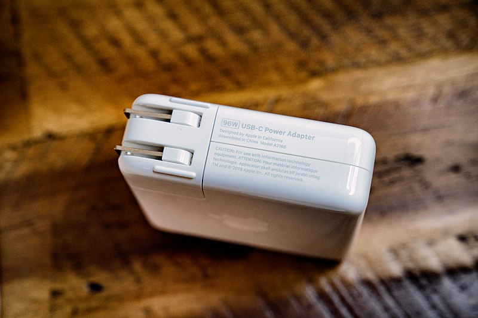

Most individuals look forward to the summer season mainly because of the many great things that come with the hot weather, including colourful flowers, blazing sunshine, and sweet summer fruits.
However, as we plan to enjoy our summer, we must also be aware of the many power outages happening around this time. During summer, the usage of air conditioners in homes increases, overloading the power grid. In turn, this leads to power outages.
Power outages during summer could be inconvenient, uncomfortable, and even dangerous, mainly for the elderly and children. Luckily for us, EP-Power provides the best generators for power outages.
Generators are simply the lifesavers during power outages. A generator is a device that produces power by converting mechanical energy into electrical energy. Usually, gas turbines, internal combustion engines, and water turbines are the primary sources of mechanical energy sources for the conversion.
There are several types of generators, each designed to meet certain user needs.
If you’re planning to get a generator, you might be wondering what different types of generators are out there. Choosing the right generator to match your needs could be daunting, given the array of options you have to choose from.
Generators can either be classified depending on their energy source or based on their application.
Based on the energy source, we have several types of generators, including;
Based on their application, generators can be classified into three main categories, namely: portable, standby, and inverter generators.
Usually powered by diesel or gas fuel, portable generators use the combustion engine to produce electricity. They are the go-to generators for constructions sites for lighting or when you need temporal electrical energy. They can be used for residential use, including to power TVs, refrigerators and lighting in homes.
Portable generators come in varying power configurations to be used for different needs. They come in handy during power grid outages or in times of natural disasters. You may find these generators in electrical and electronic appliances shops, including EP-Power.
The drawback of these generators is that you cannot operate them inside a garage or a home. Besides, they demand a lot of protection from the weather.
Also known as backup generators, standby generators are among the most popular types of generators. These generators use either diesel or gas as their energy sources and are considered the best for emergency power backup.
During power outages, standby generators work for up to 48 hours, mainly because of the large external tank. Also, they operate automatically and provide their users with a permanent power solution.
Some disadvantages of standby generators include; they are costly and require regular maintenance.
These are the types of generators that produce AC power using an engine connected to the alternator. Inverter generators are useful for appliances such as refrigerators, air conditioners, and recreational vehicles.
They are compact and light in weight, making them suitable for such applications. However, they are expensive and are not powerful enough to power heavy-duty appliances.
Just like all engine-based appliances, generators demand regular maintenance to remain operational. Each of the above-mentioned types of generators comes with a unique maintenance schedule, which users should follow.
Common maintenance practices for generators include;
EP-Power is committed to ensuring the best quality and our well-known philosophy of “Customer First”. We strive to provide our customers with first-class products and services and expand our presents in the market.
As partners with Advanced Energy, we are dedicated to providing products for a wide range of industries including semiconductor equipment, industrial, manufacturing, telecommunications, data centre computing, and medical.
For orders and enquiries about our products, you may send us an email to: sales@edac.com.sg
Unbeknownst to many, there are actually several different ways and gadgets to measure temperature. Temperature is simply the energy level of matter which can be tracked by a change in that matter. There are a variety of tools that measure temperatures from different objects in different ways. Specifically, there are seven basic types of measurement devices. Here are the seven types of devices which are used most commonly to measure temperature.
Thermocouples are a type of voltage device which indicate the change of temperature by changing voltage. As the temperature of an object increases, the voltage from the thermocouple will increase with it, although not linearly.
The actual device is usually stored within a metal or ceramic outer coating in order to protect it from high temperatures and other environmental types. There are also other types of coatings that can be used, such as Teflon, which protects against acids and caustic solutions.
These devices are electrical, but they don’t use voltage to determine temperatures. Rather, they use the resistance of the object they’re measuring to measure and record its temperature. Two main types of resistive devices exist – metallic resistive temperature devices and thermistors.
These devices are easier to use than thermocouples because their readouts are usually linear and easy to decipher. However, thermocouples are more resistive and protected than resistive devices.
These devices are great because they can read the temperature of an object without touching it. They’re especially useful for measuring the temperatures of sick people and have actually caught on in popularity during the course of the Covid-19 pandemic.
The infrared sensors come equipped with technology which turns the heat given off of a given object into light, then measure and record the light that it senses. They’re extremely accurate and quick, making them the go-to temperature-measuring devices for a variety of situations.
These are interesting devices because they measure the temperature of metals by measuring and recording the expansion of those metals when heated. Inside the actual device, two metals are bonded together and linked to a pointer.
When heated, one side of the device will expand to a greater extent than the other. These devices are not as accurate or streamlined as others, but they’re great for their portability and ease of use
The most well-known device for measuring temperatures, thermometers work by using expanding liquids to measure and record the temperature of the objects in question. There are actually two types of thermometers – mercury types and organic liquid types.
Mercury thermometers are still in use but are quickly becoming obsolete due to the use of organic thermometers and infrared scanners. Mercury thermometers are also being used less because mercury is considered a contaminant to the environment.
One of the most interesting temperature sensors, change-of-state sensors measure the change of state in a given material which is initiated by the adding or decreasing of heat. There are many commercially viable uses of these types of sensors, such as in labels, pellets, crayons, or lacquers.
Although they’re effective and accurate, these sensors often take a prolonged time to make their measurements and can be difficult to read. However, because they don’t require electricity to function, they’re used often in many different industries.
These types of measurement devices have been developed recently and specifically for cryogenic situations. The diode will conduct and measure the temperature of the object in a linear and easily readable fashion.
Although they’re accurate and quick, the reading of the sensor heavily depends on the system it is integrated into, a unique situation for a device that measures temperature. These devices are used for specific and highly scientific situations.
Traditional thermometers are great for taking temperatures of children and are still being used at schools and hospitals all over the country, but there’s a new device that is quickly making them obsolete. Infrared thermometers are the new evolution in temperature taking because they allow a patient’s temperature to be measured without the need for contact.
This makes them great for the current conditions of the Covid-19 pandemic, which is why businesses are widely adopting them at entry points. An infrared thermometer can take the temperature of any surface and reports quickly and accurately. Here’s the science and concept behind infrared thermometers.
The technology inside and throughout infrared thermometers is complex, but the concept which makes them work is simple and easy to understand. Every object with mass emits energy, and this energy is emitted in the form of heat. Infrared thermometers read the heat emanating off of objects through a series of sensors, accurately reading how hot the object is both on the surface and on the inside.
The actual temperature of the object is read by using the difference between the IR rays which emanate from the object and the surrounding environment. The light is funnelled into a detector which converts it to heat and electricity. This process takes only seconds and does not require contact between the thermometer and the object it is measuring.
Infrared technology has been adopted by many businesses and other institutions at a blistering rate for a few different reasons. First, the accuracy of an infrared thermometer is actually improved from traditional thermometers, which rely on a number of factors to be correct. These advanced thermometers are also safer, as they’re used to measure the temperatures of patrons and students who are potentially sick.
The lack of contact makes it possible to reuse the thermometer for a number of different people, rather than running through a supply of thermometers or relying solely on disinfection. Finally, these thermometers are simply more durable than their traditional counterparts. They’re tough enough to withstand accidents on a regular basis.
If you’re planning on purchasing an infrared thermometer, it’s important to keep in mind that there are several types, all graded at different temperature ranges. Each of these tools will have a rating that tells you what it’s made to measure and how hot or cold something must be before it cannot properly be read by the individual thermometer you’re buying. To select a thermometer that works best for you, should know what you’re planning to measure. For example, if you’re planning to measure heats as high as 626F, you’ll need a thermometer that is capable of measuring that high. Nearly every infrared thermometer on the market today will measure moderate ranges, but anything higher or lower will need to check out carefully.
Finally, the last feature you’ll want to look at when buying your infrared thermometer is the distance you’ll be measuring from. There are a few different ratios of distances required to measure the temperature of an object, such as 4:1, 8:1, or even 30:1. These are the most common ratios, but if you need even larger ratios, you’ll have to conduct a thorough and careful search for such a thermometer. The larger the ratio, the further away you can be from your object and still draw an accurate and quick reading. You should try to find a thermometer with a ratio that most closely matches the distance you’ll be standing when you measure your objects. If you know you’re going to be close to the object being measured, you probably won’t want a ratio of 30:1. On the other hand, if you need an abundance of space, you’ll want a ratio far larger than 4:1.
EP-POWER has the expertise to design and deliver a solution to meet your power requirements. The manufacturing know-how to meet your quality requirement and the professional team to support your business needs.
If you need more details about our products, you may send us an email for enquiries at: sales@edac.com.sg Or call us at:+6564547877.
Most of the well-known devices that we use everyday are converting Alternating Current (AC) to Direct Current (DC) and using an equipment with Direct Current (DC) to Direct Current (DC) is also an option as well. First, let us understand the difference between the two.
HOW DOES AC-DC (Alternating Current-Direct Current) WORK?
In most buildings you see in the city an AC-DC power supply is used since there’s a lot of devices that are needed to use electrical power and AC-DC power Supply is best to supply these huge demands.
ACDC converters need AC powers first from wall outlets and then convert them into unregulated Direct Current with the use of transformers that change the voltage to be compatible with what the connected device needs. This is perfect for office buildings that have different types of equipment.
The green line in the image above represents the AC-DC Power Supply.
Now we understood how AC-DC Power Supply works, let’s find out
HOW DOES DC-DC (Direct Current-Direct Current) WORK
Unlike the equipment you used in offices, DC-DC Power Supply is commonly used in Battery-Operated Devices. One perfect example is your Cell Phone.
A DC-DC power supply converts direct current coming from the power source (a battery) from one voltage level to another depending on the point-in-time needs of the device being supplied. In a Cellular Phone you’ll see several sub-circuits that need various voltage level requirements that they need for the power supply (battery). Both AC-DC and DC-DC Power Supplies need converters and transformers. Most common peripherals that are used were Power Adapters and these Power Adapters are needed for the smooth operation of devices and Equipment. Switching Power Adapters are very helpful. Not only do they help with the optimization of the equipment’s performance, but they are also specially designed to meet your specific technical and performance requirements. In a typical household scenario, we tend to keep all our phone chargers and device adapters in one place and when we need to charge them, we go and try anything that fits the device’s port without knowing you’re maybe frying your device by using an incompatible charger. This article will save you and your device as we’ll be discussing ways to determine if you’re using correct chargers for the correct device. What is an AC-DC Power Adapter? An ACDC Power Adapter is specially produced for a device to fit the device’s power requirements. AC (Alternating Current) is the power supply you get from your electrical outlets. This AC is not compatible with your device so the ACDC Power Adapter is converting it to DC (Direct Current) that matches your Device’s power requirements. Reading the AC-DC Adapter Label
Every manufacturer includes DC output on the label. Look for the “brick” part of the adapter for the word OUTPUT. Here, you’ll see the volts followed by the direct current symbol and then the current.
The DC symbol looks like this 
To check the polarity, look for a + or – sign next to the voltage. Or, look for a diagram showing the polarity. It will usually consist of three circles, with a plus or minus on either side and a solid circle or C in the middle. If the + sign is on the right, then the adapter has positive polarity:
If there is a – sign on the right, then it has negative polarity:
Next, you want to look at your device for the DC input. You’ll usually see at least the voltage near the DC plug receptacle. But you also want to make sure the current matches, too.
Always bear in mind that the input of the device should be the same as the output of the adapter.
ACDC POWER ADAPTERS should always match your device perfectly. Or else you’ll be risking the flawless performance of your device or you might not see them working.
© Copyright 2024. EP-POWER. All Rights Reserved.
Website Developed by CWT